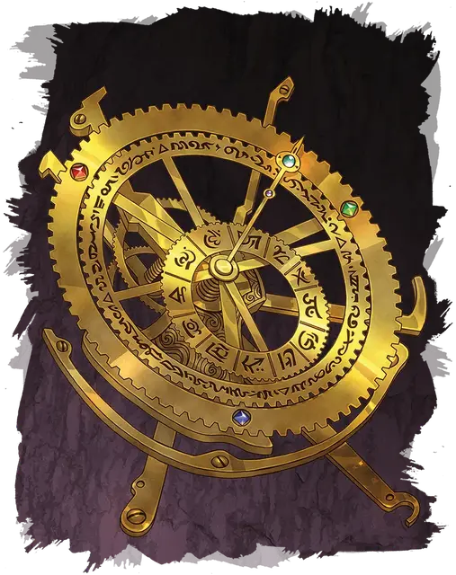

Планетарий странника
Orrery of the Wanderer
Чудесный предмет, артефакт (требуется настройка)

Это изящный и изысканно изготовленный планетарий на часовом механизме имеет множество зубцов, чьи широкие стрелки и циферблаты представляют собой сложное взаимодействие планов и магических миров. Будучи 2 фута в высоту, корпус планетария представляет собой поразительное устройство, наполненное собственной магией, но мощь его шести механических компонентов делает артефакт ещё более мощным.
Планетарий странника был создан знаменитым заводным магом, известной как Лотти. Она создала реликвию, чтобы использовать силу планов и проводить силы прорицания и предсказания звезд. Но вскоре Лотти поняла, что её творение оказалось гораздо сильнее, чем она предполагала. Присоединившись к магии планов, планетарий начала проявлять тьму и злобу, присущую некоторым планам. В конце концов, он внушает своему владельцу желание открывать порталы в самые проклятые и опасные миры, включая Дальний предел.
Чтобы планетарий никогда не использовался подобным образом, Лотти разбросала по всему миру и спрятала питающие его компоненты. Но инстинкт выживания планетария силен, и его компоненты неумолимо объединяются на протяжении десятилетий или столетий, найденные авантюристами, украденные монстрами, найденные и украденные снова—и все время приближающиеся друг к другу.
Случайные свойства. Планетарий обладает несколькими свойствами, определяемыми случайным образом:
- 2 малых положительных свойства
- 1 основное положительное свойство
- 1 основное отрицательное свойство
Случайные свойства планетария функционируют только тогда, когда все его компоненты установлены, или могут функционировать с перебоями, при отсутствии каких-либо компонентов.
Совокупность составных частей. Каждый из шести компонентов, питающих Планетарий странника, сам по себе является мощным магическим предметом:
- Запредельный механизм [far gear]
- Звездная шестерня [wheel of stars]
- Пространственная петля [dimensional loop]
- Ротор возврата [rotor of return]
- Хронолометр [chronolometer]
- Часы путешествий [timepiece of travel]
Существа могут настраиваться на компоненты планетария индивидуально. Если существо настроено на отдельный компонент, оно должно держать компонент, чтобы использовать его свойства. Существо также может настроиться на планетарий и все компоненты, установленные в нём. Настройка на установленный компонент не учитывается в общем количестве магических предметов, на которые вы можете настроиться.
В то время как компонент не установлен в планетарий, его магия может функционировать с перебоями или с непредсказуемыми побочными эффектами, как определит Мастер.
Отголоски будущего. С компонентами или без них, планетарий позволяет вам улавливать мимолетные проблески будущего, которые предупреждают вас об опасности. Пока планетарий находится в пределах 30 футов от вас, вы получаете бонус +1 к КД.
В Пустоту. С компонентами или без них, будучи настроенным на планетарий, ваш дух наполняется бушующей энергией планов. Со временем ваш мировоззрение меняется на хаотично-нейтральное, и вы вынуждены вступать в контакт с самыми опасными планами и исследовать их.
Мастер путешествий. Когда все шесть компонентов Планетария странника установлены, артефакт получает 7 зарядов. Действием вы можете прикоснуться к планетарию и потратить 1 или более зарядов, чтобы произнести одно из следующих заклинаний (Сл спасброска 17): связь с иным миром [contact other plane] (3 заряда), демиплан [demiplane] (6 зарядов), врата [gate] (7 зарядов), уход в иной мир [plane shift] (5 зарядов) или круг телепортации [teleportation circle] (3 заряда). Планетарий восстанавливает 1к4 + 4, израсходованных зарядов каждый день на рассвете.